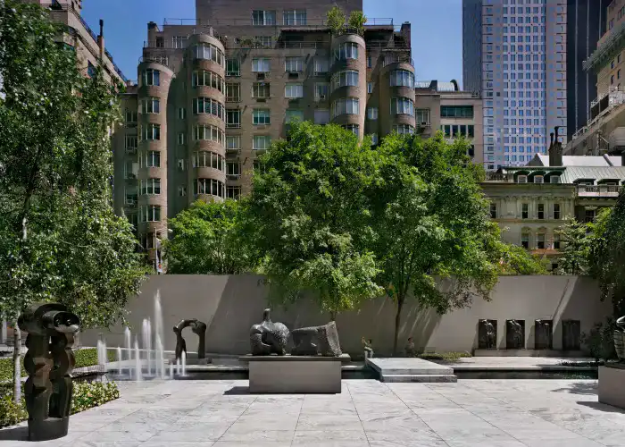
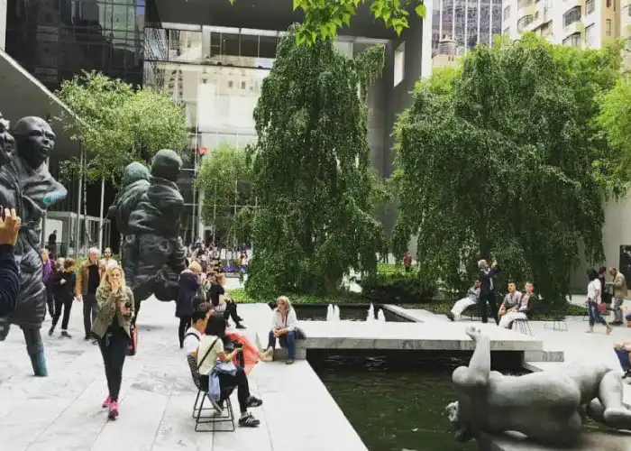

MoMA Sculpture Garden
Le MoMA Sculpture Garden est un espace extérieur au Museum of Modern Art (MoMA) à New York, présentant une collection de sculptures modernes et contemporaines dans un cadre paysager. Il offre une expérience artistique en plein air au cœur de Manhattan, créant une interaction dynamique entre l'art, l'espace et les visiteurs. Ce jardin de sculptures est distinct du travail de Philip Johnson, architecte de renom, mais il reflète également l'engagement du MoMA envers l'art moderne, un mouvement auquel Johnson était étroitement lié en tant qu'architecte et collectionneur.


Images de la cour du MoMA